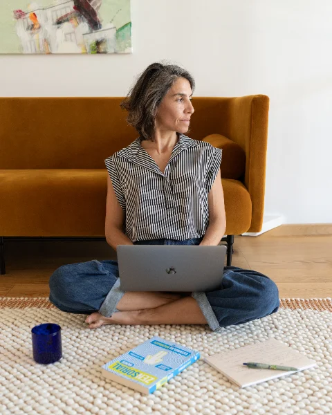
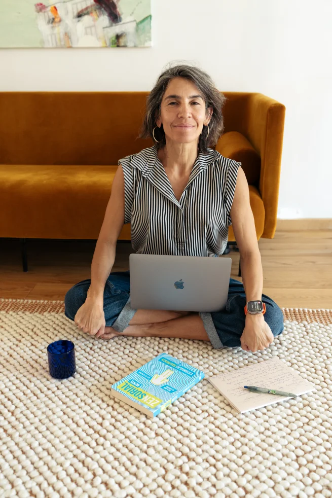

16 sesiones individuales en vivo
8 sesiones educativas y 8 sesiones 1:1 de coaching y práctica personalizada.

ALMAVIVA · Programa Intensivo · 1:1
Cuando comprender ya no es suficiente.
El cambio comienza cuando aprendes a responder de una manera diferente.
Un proceso 1:1 de ocho semanas para transformar la forma en que respondes a la vida.
Aquí no solo comprenderás cómo funcionas. Aprenderás a conocerte, reconectar contigo y entrenar nuevas respuestas para que el cambio deje de quedarse en la teoría y empiece a formar parte de tu vida cotidiana.
En resumen
Una brújula rápida antes de entrar en la profundidad del proceso.
Duración
8 semanas
Formato
16 sesiones 1:1
Método
8 educativas + 8 de coaching somático
Enfoque
Comprender, entrenar e integrar una nueva respuesta
Antes de empezar
Te conoces. Has reflexionado, buscado herramientas y quizá también has hecho terapia o coaching. Incluso puedes reconocer algunos de tus patrones y saber qué te gustaría cambiar.
Pero, cuando aparece el estrés, la autoexigencia, una decisión difícil o un vínculo que te activa, vuelves a responder desde lo conocido.
Entonces empiezas a ver que no se trata de una situación aislada, sino de una misma forma de pensar, sentir y reaccionar que se repite en distintas áreas de tu vida.
No es simplemente falta de voluntad.
Es una respuesta que tu mente y tu cuerpo han aprendido a repetir.
Tu cerebro tiende a repetir lo que ya conoce. Por eso, aunque entiendas lo que quieres cambiar, en momentos de presión, miedo o incertidumbre puedes volver a responder de la misma manera.
Lo que se repite se vuelve más automático. Pero la neurociencia también nos muestra que el cerebro es plástico: puede aprender, adaptarse y fortalecer nuevas formas de responder.
Por eso nace el Intensivo
Comprender es el comienzo. Entrenar es lo que transforma.
ALMAVIVA Intensivo es un proceso 1:1 de ocho semanas para trabajar formas de pensar, sentir y reaccionar que se repiten en distintas áreas de tu vida.
01
Para entender lo que ocurre dentro de ti: tu cerebro, tu sistema nervioso, tus emociones, tu memoria, tus creencias, tus diálogos, tus hábitos, tu atención y tu cuerpo como sistema de información.
02
Para llevar esa comprensión a la práctica: entrenar nuevas respuestas a través de tu cuerpo, tu respiración, tu atención y tus hábitos.
03
Para sostener el cambio de forma real y personalizada, semana a semana.
Este proceso no busca que te controles más ni que te exijas hacerlo perfecto. Busca que aprendas a comprenderte, regularte y entrenar nuevas respuestas con práctica, paciencia y continuidad.
Honestidad
ALMAVIVA Intensivo puede ser para ti si sientes que no estás frente a una dificultad aislada, sino ante una forma de pensar, sentir o reaccionar que se repite en diferentes áreas de tu vida.
Es para ti si:
No es para ti si...
Buscas una solución rápida, únicamente inspiración o un cambio que no requiera práctica y compromiso.
Tampoco es la opción más adecuada si solo necesitas ordenar una situación puntual o trabajar un tema muy concreto. En ese caso, una Sesión Individual o ALMAVIVA Foco puede responder mejor a lo que necesitas.
ALMAVIVA Intensivo tampoco sustituye un proceso psicológico, psiquiátrico o médico cuando se necesita atención clínica especializada.
ALMAVIVA Intensivo es un proceso profundo, práctico y acompañado.
No promete que nunca volverás a reaccionar como antes. Te ayuda a reconocer lo que se activa en ti, crear un espacio de elección y entrenar nuevas formas de responder, paso a paso.
El método ALMAVIVA
El método ALMAVIVA sigue una progresión: primero aprendes cómo funcionan tu cerebro y tu cuerpo; después, a conocerte, observarte y escucharte con más claridad; y, poco a poco, entrenas nuevas formas de responder.
Cada pilar se apoya en el anterior y aporta una parte diferente del proceso. No son herramientas aisladas, sino un recorrido que une conocimiento, observación, dirección, práctica e integración.
Aprender cómo funcionan tu cerebro y tu cuerpo
Comprender cómo funcionas cambia la manera en que te relacionas contigo.
En este pilar conoces, de forma sencilla y aplicada, cómo funcionan tu cerebro, tu sistema nervioso y tu cuerpo, y cómo intervienen en tus pensamientos, emociones, hábitos y respuestas automáticas.
No se trata de convertirte en especialista ni de aprender teoría desconectada de tu vida. Se trata de acercar la neurociencia a tu experiencia cotidiana para que puedas comprender qué ocurre dentro de ti y por qué respondes como respondes.
Dejas de verte como un problema y empiezas a comprender tu funcionamiento.
Este conocimiento se convierte en un mapa que te ayuda a interpretar con mayor claridad lo que ocurre dentro de ti y prepara la base para los siguientes pilares: observarte, definir hacia dónde quieres ir, practicar nuevas respuestas e integrar el cambio en tu vida cotidiana.
Aprender a observarte antes de reaccionar
No puedes elegir una respuesta diferente si no logras ver qué ocurre dentro de ti.
Después de comprender cómo funcionan tu cerebro y tu cuerpo, el siguiente paso es aprender a observarte mientras la vida ocurre.
Empiezas a reconocer tus pensamientos, emociones, sensaciones corporales y respuestas automáticas en el momento en que aparecen, sin dejarte llevar de inmediato por ellas.
Empiezas a ver lo que antes ocurría sin que te dieras cuenta.
Con más observación aparece más conciencia.
Con más conciencia aparece más capacidad de elección.
Y esa capacidad de elección abre el camino para el siguiente paso: definir cómo quieres responder y qué quieres construir.
Definir hacia dónde quieres ir
Es difícil sostener un cambio que no tiene un sentido propio.
Después de comprender cómo funcionas y empezar a observarte con más claridad, necesitas definir qué quieres construir.
No desde lo que deberías hacer ni desde lo que otros esperan de ti, sino desde aquello que hoy tiene valor y sentido para tu vida.
En este pilar conectas con tus valores, tus necesidades, tus deseos y tu propósito, y los conviertes en una dirección concreta para tu proceso.
Cuando el cambio tiene sentido para ti, es más fácil comprometerte con la práctica.
Este pilar convierte la observación en dirección.
Ya no se trata solo de entender cómo funcionas o reconocer lo que se activa en ti. Empiezas a definir, de manera consciente, qué quieres fortalecer y hacia dónde quieres orientar tus decisiones.
De la intención a la práctica
Saber qué quieres cambiar no basta. Necesitas entrenar una forma distinta de responder.
En este pilar conviertes tu intención en acciones pequeñas, concretas y posibles dentro de tu vida real.
No se trata de cambiarlo todo de golpe ni de hacerlo perfecto. Se trata de repetir una respuesta nueva con suficiente continuidad para que, poco a poco, se vuelva más accesible y familiar.
La repetición fortalece las rutas que utilizas. Lo que al principio requiere atención y esfuerzo puede necesitar menos con la práctica.
Cada vez que eliges responder de una manera diferente, fortaleces una nueva posibilidad.
Aprender a sostener y volver
La transformación no consiste en hacerlo perfecto. Consiste en aprender a volver.
En todo proceso de cambio habrá momentos en los que responderás desde lo conocido. Eso no significa que hayas perdido lo avanzado ni que estés comenzando de nuevo.
Integrar es aprender a reconocer esos momentos, comprender qué ocurrió y retomar el camino sin convertir una dificultad en una derrota.
En este pilar fortaleces la continuidad, ajustas lo que no funciona y desarrollas una forma más autónoma de sostener el cambio en tu vida cotidiana.
Lo nuevo se integra cuando puedes practicarlo,
ajustarlo y volver a elegirlo en tu vida real.
La consolidación necesita tiempo, repetición y continuidad.
Lo que construyes aquí no es una versión perfecta de ti, sino más autonomía, confianza en tu proceso y una mayor capacidad para volver a la forma de responder que quieres fortalecer.
La estructura
Ocho semanas que combinan aprendizaje aplicado y acompañamiento 1:1 para llevar la comprensión a tu vida cotidiana.
8 sesiones educativas · 45 min
Aprendes, de forma clara y aplicada, cómo participan tu cerebro, tu sistema nervioso y tu cuerpo en tus emociones, hábitos y respuestas automáticas.
Te llevas: un mapa para comprender qué ocurre dentro de ti y qué necesitas entrenar.
8 sesiones 1:1 de coaching y práctica · 45 min
Trabajamos con tus patrones, tu diálogo interno, tus valores, tu cuerpo y las situaciones que hoy se repiten o te activan.
Te llevas: acompañamiento personalizado, prácticas concretas y nuevas formas de responder.
Cada semana, una sesión te ayuda a comprender. La otra te ayuda a practicarlo en tu propia vida.
La progresión
No es un recorrido rígido. Cada persona avanza a su ritmo, pero existe una progresión que da sentido al proceso: primero comprendes cómo funcionas, luego aprendes a observarte, defines una dirección, entrenas nuevas respuestas y las integras en tu vida cotidiana.
Semanas 1–2 · Comprender
Construir un nuevo mapa.
Aprendes cómo funcionan tu cerebro, tu cuerpo y tu sistema nervioso, y cómo influyen en tus pensamientos, emociones, hábitos y respuestas automáticas.
Empiezas a comprender por qué reaccionas como reaccionas y dejas de interpretar muchas de tus respuestas como un defecto personal.
Objetivo
Construir una base de comprensión para todo el proceso.
Semanas 3–4 · Observación + Intención clara
De comprender cómo funcionas a reconocer lo que ocurre en ti.
Empiezas a observar, en tiempo real, tus pensamientos, emociones, sensaciones corporales, detonantes y respuestas automáticas.
Aprendes a crear una pausa para comprender qué se activa en ti antes de reaccionar y reconocer con más claridad qué necesitas.
Desde esa observación, defines qué quieres fortalecer, cómo quieres responder y qué dirección tiene sentido para tu vida.
Objetivo
Convertir la comprensión en observación y la observación en una dirección clara.
Semanas 5–6 · Acción sostenible
De la intención a la práctica.
Comienzas a practicar nuevas formas de responder en situaciones reales.
Cada semana conviertes la comprensión en pequeñas acciones sostenibles que fortalecen nuevas posibilidades de respuesta.
Objetivo
Convertir la intención en práctica cotidiana.
Semanas 7–8 · Integración
Sostener el cambio en la vida real.
Aprendes a volver cuando aparecen la duda, la incomodidad o los antiguos patrones.
Revisamos lo aprendido, fortalecemos tu autonomía y construimos una forma de sostener el cambio más allá del programa.
Objetivo
Salir con mayor claridad, confianza y herramientas para continuar el proceso.
El programa se adapta a tu historia, tu cuerpo y lo que vas necesitando. La dirección la sostengo yo; la práctica la sostienes tú.
El acompañamiento
8 sesiones educativas y 8 sesiones 1:1 de coaching y práctica personalizada.
Para que puedas revisar el contenido y volver a las prácticas cuando lo necesites.
Un espacio de apoyo entre sesiones para compartir avances, resolver dudas breves y sostener la práctica en tu vida cotidiana.
Guías, ejercicios escritos, audios y recursos prácticos para profundizar e integrar lo trabajado.
Ejercicios breves, realistas y adaptados a tu momento, tu cuerpo y tu vida cotidiana.
Revisamos y ajustamos el recorrido según lo que vas observando, necesitando y aprendiendo durante el proceso.
El cambio profundo necesita tiempo, práctica y continuidad.
ALMAVIVA te acompaña a comprender, entrenar e integrar nuevas formas de responder, paso a paso y en tu vida real.
Ocho semanas de aprendizaje, acompañamiento y práctica para construir una base sólida de cambio.
Al final del proceso
ALMAVIVA Intensivo no promete cambios inmediatos ni una vida perfecta. Te ofrece comprensión, práctica y herramientas para relacionarte contigo y responder a tu vida con mayor conciencia.
Una comprensión más clara de cómo funcionas.
Mayor conciencia de tus pensamientos, emociones, patrones y señales corporales.
Herramientas prácticas para pausar, regularte y responder con más presencia.
Una dirección más clara, conectada con tus valores y con lo que hoy tiene sentido para ti.
Prácticas y hábitos realistas para continuar entrenando en tu vida cotidiana.
Más autonomía para reconocer lo que se activa en ti y elegir cómo quieres responder.
Lo que cada persona desarrolla durante el proceso depende de su momento, sus necesidades y su compromiso con la práctica entre sesiones.
Compromiso real
ALMAVIVA Intensivo no es un proceso pasivo. El acompañamiento importa, pero el cambio también necesita tu participación entre sesiones. Para aprovecharlo, necesitas disposición para observarte, practicar, revisar lo que ocurre y sostener pequeños cambios en tu vida cotidiana.
Mirarte con apertura, claridad y menos juicio.
Aplicar entre sesiones lo que vas aprendiendo.
Incluir lo que sientes y percibes, no solo lo que piensas.
Comprender que el cambio necesita tiempo, repetición y continuidad.
El cambio profundo no se fuerza. Se practica, se repite y se integra.
Cómo elegir
Los tres son acompañamientos 1:1. La diferencia no está en cuál es mejor. Está en el momento en el que estás y en lo que hoy necesitas...
Sesiones Individuales
Cuando necesitas detenerte y ganar claridad.
No siempre hace falta iniciar un proceso completo. A veces solo necesitas un espacio para ordenar lo que estás viviendo, comprender lo que ocurre y decidir cuál es el siguiente paso. Ideal cuando todavía estás explorando.
ALMAVIVA Foco
Cuando sabes exactamente qué quieres trabajar.
Está pensado para profundizar en un patrón, una dificultad o un objetivo concreto. Todo el proceso gira alrededor de ese único foco, combinando comprensión, práctica y entrenamiento. Ideal cuando ya sabes qué quieres transformar.
ALMAVIVA Intensivo
Cuando sientes que no es solo un tema.
Hay formas de pensar, sentir y responder que aparecen en distintas áreas de tu vida. El Intensivo no trabaja un problema aislado. Te ayuda a comprender cómo funcionas, conocerte mejor y entrenar nuevas formas de responder que puedas llevar a cualquier situación. Ideal cuando buscas un cambio más amplio y profundo.
Cada persona necesita un tipo de acompañamiento distinto según el momento que está viviendo: a veces detenerse y ganar claridad, otras trabajar un tema concreto y, otras, transformar una forma de responder que se repite.
Por eso ALMAVIVA ofrece tres caminos diferentes.
Honestidad sobre el alcance
ALMAVIVA es un espacio donde aprendes cómo funcionan tu cerebro y tu cuerpo, profundizas en tu autoconocimiento y entrenas nuevas formas de responder en tu vida cotidiana.
No reemplaza un proceso terapéutico ni una intervención clínica cuando estos son necesarios.
En ALMAVIVA trabajas con aquello que puedes observar, comprender y entrenar en el presente. El objetivo es ayudarte a conocerte mejor, desarrollar nuevas habilidades y construir respuestas más conscientes para tu vida cotidiana.
ALMAVIVA no sustituye un proceso terapéutico ni una intervención clínica. No está diseñado para tratar trauma complejo, crisis de salud mental agudas, depresión mayor, trastornos de ansiedad graves, diagnósticos psiquiátricos o eventos traumáticos que requieren acompañamiento terapéutico especializado.
Terapia + ALMAVIVA
Acompaña procesos terapéuticos cuando existe un motivo clínico o un sufrimiento que requiere intervención especializada.
Enseña cómo funciona tu cerebro, tu cuerpo y tu sistema nervioso, y te ayuda a entrenar nuevas formas de responder en tu vida cotidiana.
Inversión
La inversión se conversa durante la sesión de descubrimiento, donde revisamos el proceso, resolvemos tus dudas y vemos si ALMAVIVA Intensivo es adecuado para ti en este momento.
No trabajamos con urgencias, descuentos ni presión comercial.
La intención es que puedas decidir con claridad, información y tranquilidad.
Tu primer paso · Sesión de descubrimiento gratuita
Una conversación gratuita de 30 a 45 minutos para explorar tu situación actual, resolver tus dudas y valorar juntes si ALMAVIVA es adecuado para ti en este momento. Si este no es el momento o necesitas otro tipo de apoyo, también te lo diré.

Convicción fundadora
Tu cerebro puede aprender. Tu mente puede abrir nuevas rutas. Tu cuerpo puede regularse.
Y tu forma de responder a la vida puede transformarse.
No desde la fuerza de voluntad. No desde la culpa. No desde exigirte más.
Sino desde la conciencia, la práctica y una forma más humana de compromiso contigo.
Eso es neuroplasticidad consciente.